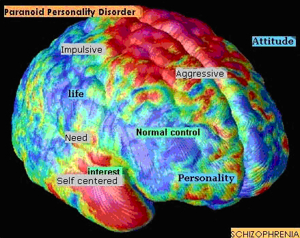

information–based ideation
Information-based ideation (IBI) is a paradigm for investigating and evaluating creativity support tools that involve people in generating and developing new ideas through interaction with and reflection on personal, social, and popular media.
- Information-based ideation tasks and activities involve imagining, conceptualizing, planning, design, development, invention, reflection, and/or synthesis.
- IBI tasks go beyond seeking and learning facts, beyond understanding what already is. While IBI is engaged across life and work, many tasks involving information, e.g., fact finding, do not involve IBI.
- IBI activities connect analysis and synthesis.
- IBI goals include to think, get a sense, have ideas, develop interpretations, achieve insight, gain a new vantage, build perspective, and contribute innovation. Or IBI can emerge without planned goals.
- Personal IBI activities include a meal, outing, vacation, personal or home makeover, creative outlet, relationship, child, transition, and life stage. Academic IBI tasks include a paper, internship, education, degree, thesis, and career. Professional IBI tasks include projects, campaigns, exploration, design, artwork, and invention.
- Fields in which IBI is important include science, engineering, humanities, arts, architecture, entertainment, business, exploration, and crisis response.
- People curate through engagement in IBI, that is, they assemble and think about information, creating exhibits in many forms. Curation of digital media incorporates conceptualization, choosing found information, annotation, and synthesis.
-
To formulate a quantitative methodology for evaluating IBI support tools, we build on prior creative cognition research in engineering design to derive a battery of ideation metrics of curation.
These are used to measure the creative products that people make using
particular creativity support environments, while engaged in IBI activities.
- Elemental metrics include Fluency (number of ideas), Flexibility / Variety (diversity of ideas), and novelty (the rareness of ideas.
- Holistic metrics include Emergence (new ideas come about through combinations of prior ones), Visual Presentation, and Exposition (Written Presentation).
- Our research in qualitative evaluation of IBI is based in grounded theory, i.e., in processes of continuous comparison, in which participants' perspectives are iteratively elicited, characterized, categorized (coded), connected, and verified, building theory.
The Interface Ecology Lab's research develops and invokes mixed evaluation methods for information-based ideation, connecting quantitative and qualitative data and analysis.
publications
 Kerne, A., Webb, A.M., Smith, S.M., Linder, R., Lupfer, N., Qu, Y., Moeller, J., Damaraju, S.,
Using Metrics of Curation to Evaluate Information-based Ideation
,
ACM Transactions on Computer-Human Interaction (ToCHI),
21(3), June 2014, 48 pages.
http://dx.doi.org/10.1145/2591677
Kerne, A., Webb, A.M., Smith, S.M., Linder, R., Lupfer, N., Qu, Y., Moeller, J., Damaraju, S.,
Using Metrics of Curation to Evaluate Information-based Ideation
,
ACM Transactions on Computer-Human Interaction (ToCHI),
21(3), June 2014, 48 pages.
http://dx.doi.org/10.1145/2591677
 Linder, R., Snodgrass, C., and Kerne, A.
Everyday Ideation: All of My Ideas Are On Pinterest,
Proc. CHI 2014, 2411-2420 [23%].
http://dx.doi.org/10.1145/2556288.2557273
Linder, R., Snodgrass, C., and Kerne, A.
Everyday Ideation: All of My Ideas Are On Pinterest,
Proc. CHI 2014, 2411-2420 [23%].
http://dx.doi.org/10.1145/2556288.2557273
 Webb, A.M., Kerne, A., Linder, R., Lupfer, N., Qu, Y., Keith, K., Carrasco, M.,
Multi-Scale Information Composition: a New Medium for Freeform Art Curation in the Cloud,
CHI 2014 Workshop: Curating the Digital: Spaces for Art and Interaction, Toronto, Canada, April 2014.
Webb, A.M., Kerne, A., Linder, R., Lupfer, N., Qu, Y., Keith, K., Carrasco, M.,
Multi-Scale Information Composition: a New Medium for Freeform Art Curation in the Cloud,
CHI 2014 Workshop: Curating the Digital: Spaces for Art and Interaction, Toronto, Canada, April 2014.
 Webb, A.M., Linder, R., Kerne, A., Lupfer, N., Qu, Y., Poffenberger, B., and Revia, C.,
Promoting Reflection and Interpretation in Education: Curating Rich Bookmarks as Information Composition,
Proc. Creativity and Cognition 2013, 53-62 [32%].
Webb, A.M., Linder, R., Kerne, A., Lupfer, N., Qu, Y., Poffenberger, B., and Revia, C.,
Promoting Reflection and Interpretation in Education: Curating Rich Bookmarks as Information Composition,
Proc. Creativity and Cognition 2013, 53-62 [32%].
 Kerne, A., Latulipe, C., Drucker, S.M., Candy, L., Höök, K., Webb, A.M., and Carroll, E.
Evaluation methods for creativity support environments,
Proc CHI 2013 Extended Abstracts, 3295-3298.
http://dx.doi.org/10.1145/2468356.2479670
Kerne, A., Latulipe, C., Drucker, S.M., Candy, L., Höök, K., Webb, A.M., and Carroll, E.
Evaluation methods for creativity support environments,
Proc CHI 2013 Extended Abstracts, 3295-3298.
http://dx.doi.org/10.1145/2468356.2479670
 Linder, R., Webb, A.M., and Kerne, A.,
Searching to Measure the Novelty of Collected Ideas,
CHI 2013 Evaluation Methods for Creativity Support Environments Workshop, Paris, France, May 2013.
Linder, R., Webb, A.M., and Kerne, A.,
Searching to Measure the Novelty of Collected Ideas,
CHI 2013 Evaluation Methods for Creativity Support Environments Workshop, Paris, France, May 2013.
 Webb, A.M. and Kerne, A.,
Creative Visual Thinking through Information Composition + Diagramming,
CHI 2012 Visual Thinking & Digital Imagery Workshop, Austin, TX, USA, May 2012.
Webb, A.M. and Kerne, A.,
Creative Visual Thinking through Information Composition + Diagramming,
CHI 2012 Visual Thinking & Digital Imagery Workshop, Austin, TX, USA, May 2012.
 Webb, A.M., Kerne, A.
Integrating Implicit Structure Visualization with Authoring Promotes Ideation,
Proc Joint ACM/IEEE Conf on Digital Libraries (JCDL),
June 13–17, 2011, Ottawa, Canada.
Webb, A.M., Kerne, A.
Integrating Implicit Structure Visualization with Authoring Promotes Ideation,
Proc Joint ACM/IEEE Conf on Digital Libraries (JCDL),
June 13–17, 2011, Ottawa, Canada.
 Kerne, A., Koh, E., Smith, S. M., Webb, A., Dworaczyk, B.,
combinFormation: Mixed-Initiative Composition of Image and Text Surrogates Promotes Information Discovery
,
ACM Transactions on Information Systems (TOIS), 27(1), Dec. 2008, 5:1-45.
http://dx.doi.org/10.1145/1416950.1416955
Kerne, A., Koh, E., Smith, S. M., Webb, A., Dworaczyk, B.,
combinFormation: Mixed-Initiative Composition of Image and Text Surrogates Promotes Information Discovery
,
ACM Transactions on Information Systems (TOIS), 27(1), Dec. 2008, 5:1-45.
http://dx.doi.org/10.1145/1416950.1416955
 Kerne, A., Smith, S.M., Koh, E., Choi, H., Graeber, R.,
An Experimental Method for Measuring the Emergence of New Ideas in Information Discovery,
International Journal of Human-Computer Interaction (IJHCI),
24 (5) July 2008, 460-477.
http://dx.doi.org/10.1080/10447310802142243
Kerne, A., Smith, S.M., Koh, E., Choi, H., Graeber, R.,
An Experimental Method for Measuring the Emergence of New Ideas in Information Discovery,
International Journal of Human-Computer Interaction (IJHCI),
24 (5) July 2008, 460-477.
http://dx.doi.org/10.1080/10447310802142243
 Kerne, A., Koh, E.,
Representing Collections as Compositions to Support Distributed Creative Cognition and Situated Creative Learning,
New Review of Hypermedia and Multimedia (NRHM),
13(2) Dec 2007, 135-162.
http://dx.doi.org/110.1080/13614560701711859
Kerne, A., Koh, E.,
Representing Collections as Compositions to Support Distributed Creative Cognition and Situated Creative Learning,
New Review of Hypermedia and Multimedia (NRHM),
13(2) Dec 2007, 135-162.
http://dx.doi.org/110.1080/13614560701711859

Kerne, A., Koh, E., Smith, S.M., Choi, H., Graeber, R., Webb., A.,
Promoting Emergence in Information Discovery by Representing Collections with Composition,
Proc ACM Creativity and Cognition 2007, 117-126 [23%].
http://dx.doi.org/10.1145/1254960.1254977
 Koh, E., Kerne, A.,
I Keep Collecting: College Students Build and Utilize Collections in Spite of Breakdowns, Proc European Conf
on Digital Libraries (ECDL) 2006, 303-314 [27%].
http://dx.doi.org/10.1007/11863878_26
Koh, E., Kerne, A.,
I Keep Collecting: College Students Build and Utilize Collections in Spite of Breakdowns, Proc European Conf
on Digital Libraries (ECDL) 2006, 303-314 [27%].
http://dx.doi.org/10.1007/11863878_26
 Kerne, A., Smith, S.M., Choi, H., Graeber, R., Caruso, D.,
Evaluating
Navigational Surrogate Formats with Divergent Browsing Tasks, Proc CHI 2005 Extended, 1537-1540.
http://dx.doi.org/10.1145/1056808.1056960
Kerne, A., Smith, S.M., Choi, H., Graeber, R., Caruso, D.,
Evaluating
Navigational Surrogate Formats with Divergent Browsing Tasks, Proc CHI 2005 Extended, 1537-1540.
http://dx.doi.org/10.1145/1056808.1056960
Kerne, A., Smith, S.M.,
The Information Discovery Framework.
Proc ACM Designing Interactive Systems (DIS) 2004, 357-360 [25%].
http://dx.doi.org/10.1145/1013115.1013179
Shah, J.J., Smith, S.M., Vargas-Hernandez, N., Gerkins, D.R.,
Wulan, M. (2003)
Empirical
Studies of Design Ideation: Alignment of Design Experiments with Lab Experiments,
Proc DETC 2003: ASME 2003 International Conference on Design Theory and Methodology, 847-856.
Shah, J.J., Smith, S.M., Vargas-Hernandez, N. (2002)
Metrics
for Measuring Ideation Effectiveness,
Design Studies,
24:2, 111-134.
Dodds, R. A., Ward, T.B., & Smith, S.M. (2003)
Review of experimental literature on
incubation in problem solving and creativity, in M. A. Runco (Ed.), Creativity research handbook, Vol. 3. Cresskill, NJ: Hampton Press.
Ward, T.B., Smith, S.M., Finke, R.A. (1999)
Creative Cognition, in
Handbook of creativity, Sternberg, R.J., ed, Cambridge, U.K. : Cambridge University Press.
Smith, S.M., Ward, T.B., Finke, R.A. (1995)
Principles, Paradoxes, and Prospects for the Future of Creative Cognition,
in
Smith, S.M., Ward, T.B., Finke, R.A., The Creative Cognition Approach, Cambridge: MIT Press, 327-335.
Smith, S.M.(1994)
Getting
Into and Out of Mental Ruts: A theory of Fixation, Incubation, and Insight,
in Sternberg, R.J., Davidson, J., The Nature of Insight, Cambridge, MA, MIT Press, 121-149.
Smith, S.M., Ward, T.B., Schumacher, J.S. (1993)
Constraining effects of examples in a creative generation task,
Memory & Cognition, 21, 837-845.
Smith, S.M., Blankenship, S.E. (1991)
Incubation
and the Persistence of Fixation in Problem Solving,
Am Journ Psychology, 104, 61-87.
 Jansson, D.G., Smith, S.M., (1991)
Design Fixation,
Design Studies, 12:1, 3-11.
Jansson, D.G., Smith, S.M., (1991)
Design Fixation,
Design Studies, 12:1, 3-11.